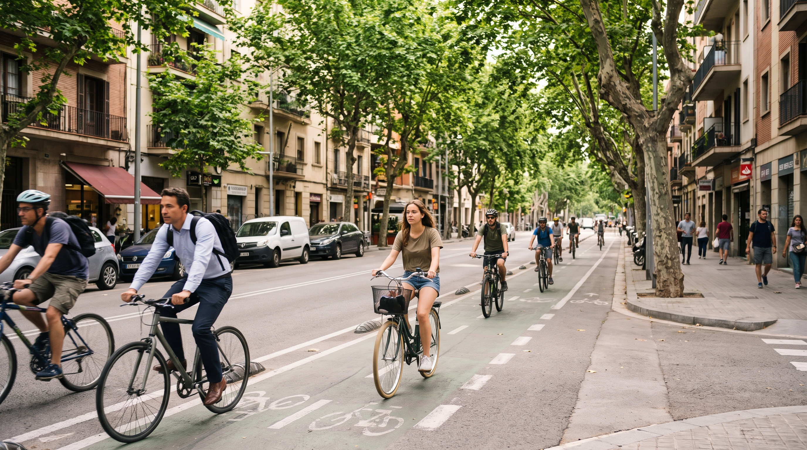
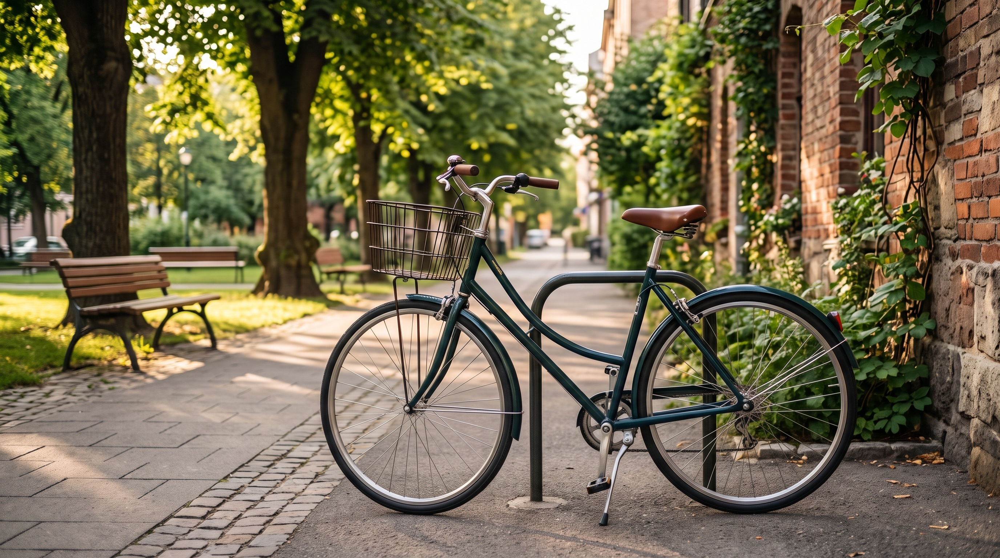
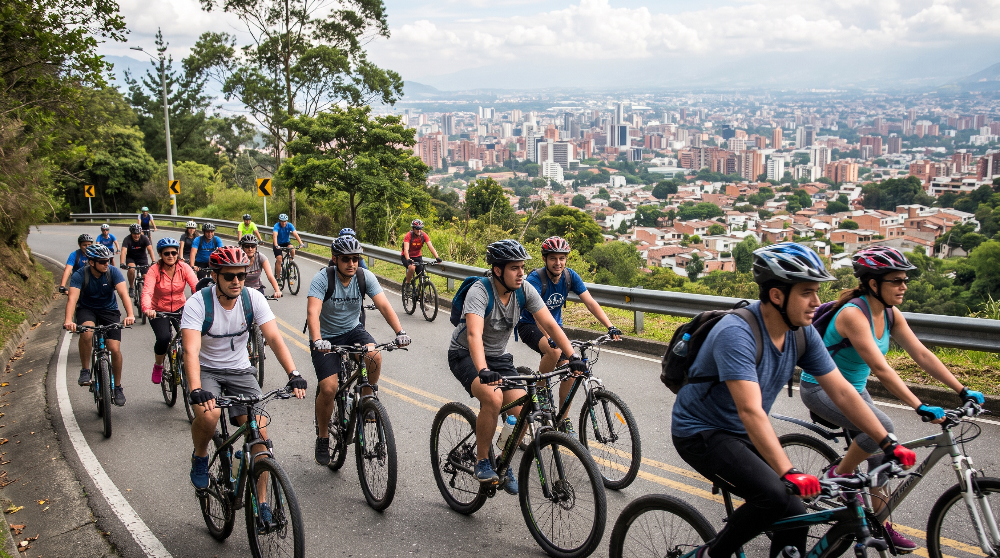

¡Bienvenido a Rueda Libre! Descubre Medellín sobre dos ruedas: alquila tu bicicleta o únete a uno de nuestros recorridos guiados. Si quieres visitarnos, mira dónde encontrarnos.

Somos un emprendimiento paisa que nació del amor por la bicicleta. Desde 2022 ayudamos a turistas y locales a recorrer la ciudad de forma sana, económica y sin tráfico.
Elige entre bicicletas urbanas, de montaña o eléctricas, por horas, medio día o día completo. Todos los planes incluyen casco y candado. Ideal para quienes prefieren explorar sin prisa.

Salidas en grupo los sábados y domingos a las 7:00 a. m., con rutas por parques, barrios y montaña. Cada recorrido va con un guía certificado, y la mejor parte siempre es la vista desde arriba.

¿Tu bicicleta hace ruidos raros? Revisamos frenos, cadena y llantas mientras te tomas un tinto. Ajuste básico gratis con tu alquiler.
Estamos en la Calle 10 # 43-20, El Poblado, Medellín.